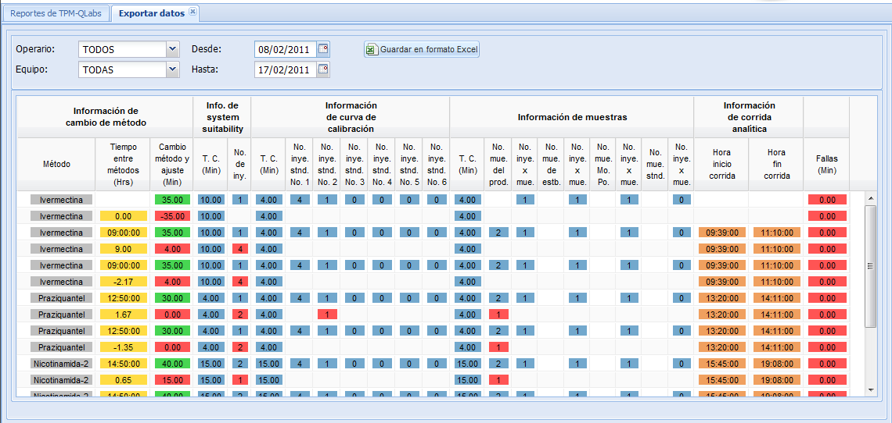

Exportar
datos de corridas analíticas
Para exportar los datos de corridas analíticas, seleccione el
periodo entre
fechas y si es necesario el equipo y/o el analista. El sistema
desplegará una lista en la parte inferior de la pantalla con los
datos
según la configuración dada por usted y si desea guardar los datos
en
formato de hoja de cálculo pulse el botón Guardar
en formato Excel, por lo que el sistema descargará un
archivo con los datos de la corrida que se
mostraron en la lista. En la Figura 1 se muestra la lista de
datos de
corrida.

Figura 1. Pantalla exportar datos.